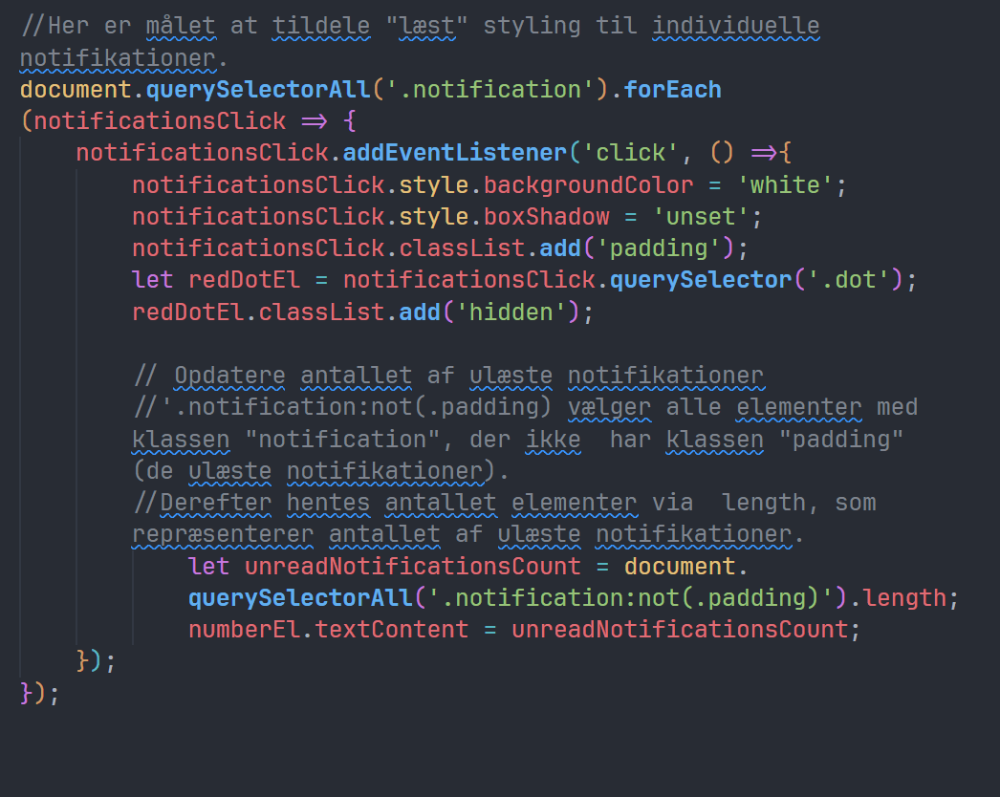

JavaScript
Jeg bruger vanilla JavaScript til at fange relevante
HTML-elementer med document.querySelector og querySelectorAll,
hvor forEach bruges til at loope igennem flere elementer, og
querySelector anvendes for enkeltstående elementer.
Den første funktion looper igennem ulæste notifikationer,
opdaterer stylingen, fjerner røde prikker med klassen "hidden" og
opdaterer tekstindholdet i numberEl for at vise korrekt antal
ulæste notifikationer.

Den sidste del tilføjer en eventListener til hver notifikation, så
de kan markeres som "læst" ved klik. Ved klik fjernes den blå
baggrund og røde prik, og antallet af ulæste notifikationer
opdateres i toppen af siden.
Padding-klassen adskiller læste og ulæste notifikationer og sikrer
korrekt tælling. Notifikationer med padding tælles ikke som
ulæste, og ('.notification:not(.padding)') vælger kun de uden
padding-klassen for at opdatere tælleren.